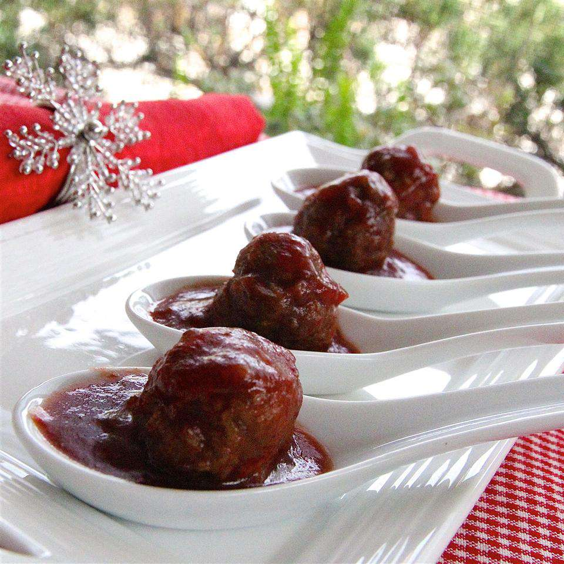

Cocktail Meatballs

Description
It's an unwritten rule that every holiday party menu must include classic mini meatballs in cranberry sauce. What
sets these ruby beauties apart is the sweet chili sauce kick that comes with every bite. Fill a slow cooker with
this popular appetizer and let folks help themselves.
Ingredients
- 1 pound lean ground beef
- ½ cup bread crumbs
- 3 tablespoons minced onion
- 2 tablespoons water
- 1 large egg
- 1 (8 ounce) can jellied cranberry sauce
- ¾ cup chili sauce
- 1 tablespoon brown sugar
- 1 ½ teaspoons lemon juice
Steps
- Preheat the oven to 350 degrees F (175 degrees C).
- Mix ground beef, bread crumbs, onion, water, and egg together in a large bowl. Form into small meatballs and
arrange on a nonstick baking sheet.
- Bake in the preheated oven for 20 to 25 minutes, turning once.
- Stir cranberry sauce, chili sauce, brown sugar, and lemon juice together in a large saucepan over low heat
until smooth. Add meatballs; simmer for 1 hour before serving.